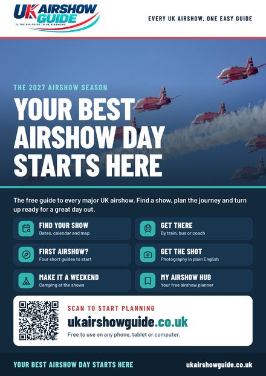
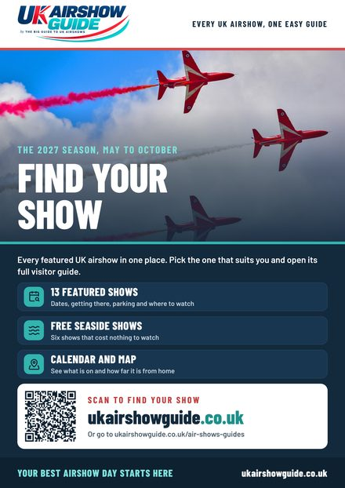
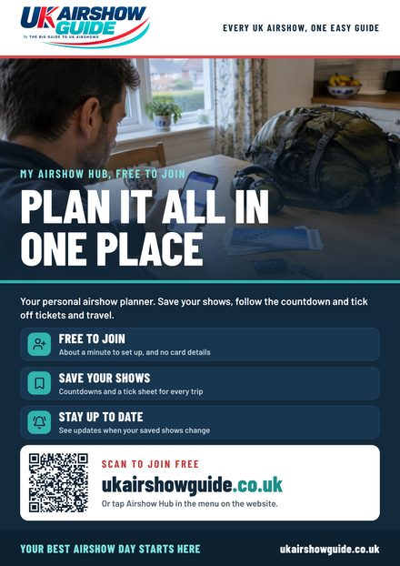
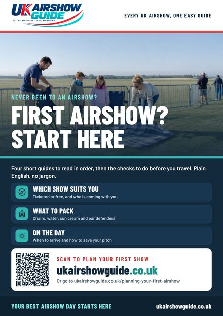
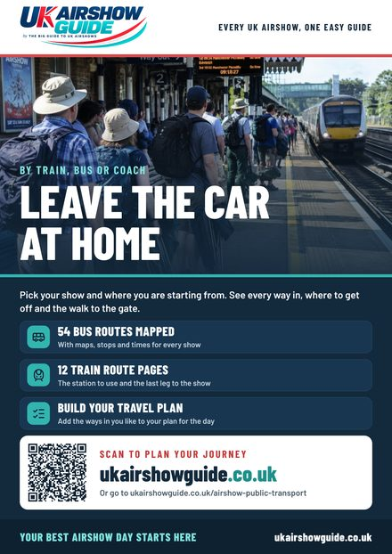
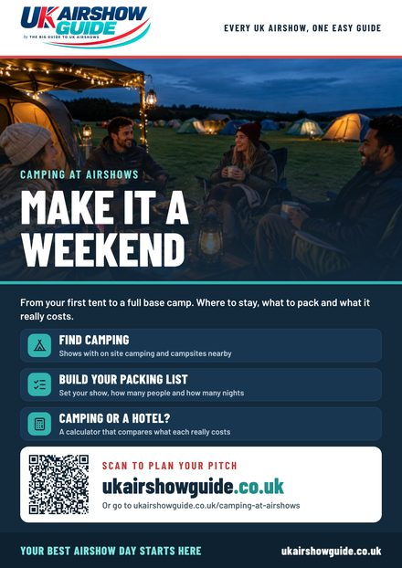
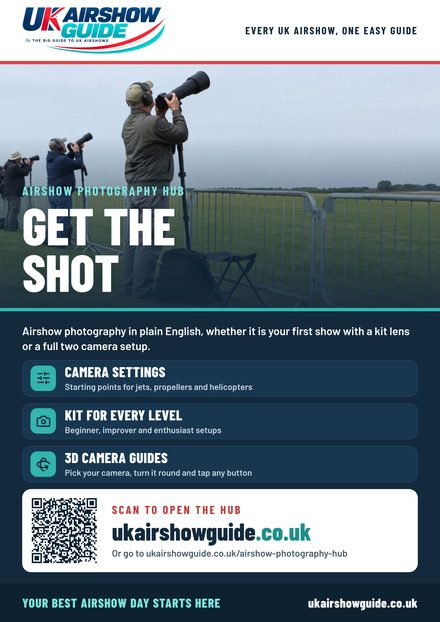

2027 season marketing campaign
Your best airshow day starts here
A season-long campaign that uses seven posters, your four social channels and QR codes to bring people planning a 2027 airshow to the six most useful parts of the guide.
2027 season marketing campaign
A season-long campaign that uses seven posters, your four social channels and QR codes to bring people planning a 2027 airshow to the six most useful parts of the guide.
Name: Your Best Airshow Day Starts Here. Runs: Monday 30 November 2026 to Saturday 2 October 2027, the last date on your 2027 calendar.
In one sentence: show people who are thinking about an airshow in 2027 that one free guide covers finding a show, getting there and being ready on the day.
Main goal: more visits to six pages (Find Your Airshow, Public Transport, Planning Your First Airshow, Photography Hub, Camping at Airshows and My Airshow Hub) from campaign posters and posts.
Other goals: more My Airshow Hub members, and more followers on Facebook, Instagram, YouTube and TikTok.
| Audience | What they want | What worries them | Pages to send them to |
|---|---|---|---|
| First timers and families (main audience) | A good day out that everyone enjoys | Cost, parking, children, noise, what to bring | First Airshow, Find Your Airshow, Public Transport |
| Enthusiasts and photographers | Several shows a year and better photos | Settings, kit, where to stand, line up changes | Photography Hub, My Airshow Hub |
| Weekenders and campers | To make a trip of it | Where to stay, what to pack, what it costs | Camping at Airshows, My Airshow Hub |
Where to reach them: Facebook airshow and local community groups, Instagram and TikTok, YouTube, camera clubs, aviation museums and cafes, campsites near the shows, and the shows themselves.
Core message: Your best airshow day starts here: one free guide for every major UK airshow.
| Message | Proof from the site |
|---|---|
| There is a show that suits you | 13 featured show guides, 6 free seaside shows, and a calendar listing 46 confirmed 2027 shows (as of 5 November 2026) |
| Getting there is sorted | 54 bus routes mapped, 12 train route pages, and a planner from your front door |
| New to airshows? Start here | Four short guides to read in order, plus the checks to do before you travel |
| It is free and written by someone who goes | Free to use, the Hub is free to join with no card details, and every guide is written in the first person |
Tone: the same plain, first person voice as the site. Facebook can be longer and more practical. Instagram and TikTok lead with the photo or clip and one line. YouTube descriptions and pinned comments carry the link.
| Channel | Why | What to post | Effort |
|---|---|---|---|
| Printed A4 posters | Reaches people who do not follow you yet. Each QR code opens the right page | All seven posters, matched to the place (see section 6) | Medium |
| Facebook page and groups | Where families and local groups plan days out | Poster plus caption, pinned launch post, helpful replies in groups with the link | Medium |
| Photo led, good for photographers and show fans | Poster as a post, the same photo as a story with a link sticker, short reels | Medium | |
| TikTok | Newest channel, reaches younger and first time visitors | 15 to 30 second clips: one tip per video, ending on the poster headline | Medium |
| YouTube | Your videos already bring in airshow viewers | Add the matching page link to descriptions and pinned comments, and a Shorts version of each tip | Low |
| The website | Visitors on one page should find the other five | Link the six pages to each other, and show the campaign line on the home page | Low |
| Show organisers and partners | They want visitors to arrive prepared | Send the matching poster and link to shows, campsites and camera clubs to share | Medium |
Paid advertising: none assumed. If you want to try it later, boost the single post that has done best on its own and set a small fixed limit.
| Phase | When | Focus |
|---|---|---|
| 1. Launch and plan ahead | 30 November 2026 to end of January 2027 | Introduce the campaign, then one page a week while people choose shows and buy tickets |
| 2. Get ready | February to April 2027 | Repeat the six pages a fortnight at a time, and get posters up in real places |
| 3. In season | 8 May to 2 October 2027 | A set routine around each featured show (below) |
| 4. Review | October 2027 | What worked, what to keep for 2028 |
| Week starting | Poster and page | Where | Notes |
|---|---|---|---|
| Mon 30 Nov | Your best airshow day starts here (whole guide) | All four channels | Pin the post, update profile links, order the first print run |
| Mon 7 Dec | Find your show | Facebook, Instagram, TikTok | Ask followers which show they are going to in 2027 |
| Mon 14 Dec | Plan it all in one place (My Airshow Hub) | Facebook, Instagram | Lead on free to join and no card details |
| Mon 21 Dec | Re-share the campaign poster | Stories only | Light week over Christmas |
| Mon 28 Dec | Find your show again, with the calendar | All four channels | New year angle: the season opens Saturday 8 May at IWM Duxford |
| Mon 4 Jan | First airshow? Start here | Facebook, TikTok, YouTube Shorts | One tip per video from the four guides |
| Mon 11 Jan | Leave the car at home | Facebook, Instagram | Good one for local community groups near each show |
| Mon 18 Jan | Make it a weekend (camping) | Facebook, Instagram, TikTok | Share with campsite pages |
| Mon 25 Jan | Get the shot (photography) | Instagram, YouTube, camera clubs | Then check the numbers and adjust (section 7) |
Leave about one post in five free for news, such as date announcements and aircraft confirmations.







| Poster | Best places to put it |
|---|---|
| Your best airshow day starts here | Anywhere general: libraries, community noticeboards, cafes, museum shops, your stand at shows |
| Find your show | Tourist information, libraries, workplaces and schools noticeboards |
| Leave the car at home | Near stations and bus stops, community boards in towns that host a show |
| First airshow? Start here | Family venues: soft play, leisure centres, schools and youth groups |
| Get the shot | Camera shops, camera clubs, aviation museums and viewing areas |
| Make it a weekend | Campsites near the shows, outdoor and camping shops |
| Plan it all in one place | Your own stand and at the shows, where people already have a show in mind |
| Item | What it is | Priority |
|---|---|---|
| Seven A4 posters | Done: PNG, print ready PDF and an editable Adobe Express copy | Done |
| Captions for each poster | Done: on the last page and in captions.txt | Done |
| Social sizes of each poster | Square or 4:5 for feeds and 9:16 for stories, reels and TikTok | Must have |
| Six short videos | 15 to 30 seconds, one tip for each page | Must have |
| Pinned post and profile links | The campaign poster pinned on each channel, link in every bio | Must have |
| Home page mention | The campaign line and links to the six pages | Nice to have |
| Partner pack | One PDF of all seven posters for shows, campsites and clubs to print | Nice to have |
Every QR code and every caption link carries the tag bestday27. In your website visitor reports, look at visits by campaign: source poster is QR scans from print, and source social is clicks from posts.
| Measure | Where to find it | Starting target |
|---|---|---|
| Visits to the six pages (main measure) | Website visitor reports, by page | 25% more than the eight weeks before launch, by the end of April |
| QR scans from posters | Visits tagged bestday27 with source poster | Count from zero. Compare posters to see which places work |
| Clicks from social posts | Visits tagged bestday27 with source social | Compare the six pages to see which message pulls best |
| New My Airshow Hub members | Your site members list | Set after the first month |
| Followers on each channel | Each platform | Steady monthly growth, TikTok first as the newest |
When to check: once a month, with a proper look at the end of January, the end of April, after RIAT in July and at the end of the season.
No budget was given, so the plan uses your own channels and your time. Printing is the only real cost. Print a small first batch, see which posters get scanned, then reprint the ones that work. Get a quote before a large run.
| Risk | What to do |
|---|---|
| Numbers on the posters go out of date. Four posters quote counts from the site (13 featured shows, 6 free seaside shows, 54 bus routes, 12 train route pages) | Check them before each print run. The editable Adobe Express copy makes them quick to change |
| A page address changes and a printed QR code stops working | Keep the six page addresses as they are for the whole season, or add a redirect if one has to move |
| Time. One person running four channels all season | Write and schedule a month of posts in one sitting, and reuse each clip on all four channels |
| Photos of people. Four posters show identifiable people | Check you are happy that you have the rights and consent to use those photos in print before the first run |
One for each poster. Add hashtags where they fit: #UKAirshows #Airshow #Airshow2027 #AvGeek #AviationPhotography #DaysOutUK
Your best airshow day starts here. ✈️
One free guide for every major UK airshow: find a show, plan the journey and turn up ready for a great day out.
Start planning your 2027 season:
https://www.ukairshowguide.co.uk/?utm_source=social&utm_medium=post&utm_campaign=bestday27
Which airshow are you going to in 2027?
The season runs from May to October. I have put every featured show in one place, with a full visitor guide for each one, plus a calendar and a map so you can see what is on near you.
Find your show:
https://www.ukairshowguide.co.uk/air-shows-guides?utm_source=social&utm_medium=post&utm_campaign=bestday27
My own airshow planning used to live in five different places. So I built My Airshow Hub.
Save your shows, follow the countdown and tick off tickets and travel. It is free to join, takes about a minute and never asks for card details.
Join free:
https://www.ukairshowguide.co.uk/my-airshow-hub?utm_source=social&utm_medium=post&utm_campaign=bestday27
Never been to an airshow? Start here.
Four short guides to read in order: which show suits you, getting there, what to pack and what to do on the day. Then the checks I do before every show.
Plan your first airshow:
https://www.ukairshowguide.co.uk/planning-your-first-airshow?utm_source=social&utm_medium=post&utm_campaign=bestday27
You do not need the car to get to an airshow.
Pick your show and where you are starting from, and I will show you every way in by train, bus or coach, where to get off and the walk to the gate.
Plan your journey:
https://www.ukairshowguide.co.uk/airshow-public-transport?utm_source=social&utm_medium=post&utm_campaign=bestday27
Thinking about camping at an airshow this year?
From your first tent to a full base camp: where to stay, what to pack, and a calculator that shows what camping really costs next to a hotel.
Plan your pitch:
https://www.ukairshowguide.co.uk/camping-at-airshows?utm_source=social&utm_medium=post&utm_campaign=bestday27
You do not need the most expensive camera to come home with airshow photos you are proud of.
Starting settings for jets, propellers and helicopters, kit for every level, and 3D guides for your own camera.
Open the Photography Hub:
https://www.ukairshowguide.co.uk/airshow-photography-hub?utm_source=social&utm_medium=post&utm_campaign=bestday27
Plan written 21 November 2026. Counts and dates are taken from ukairshowguide.co.uk as it stood on that date.